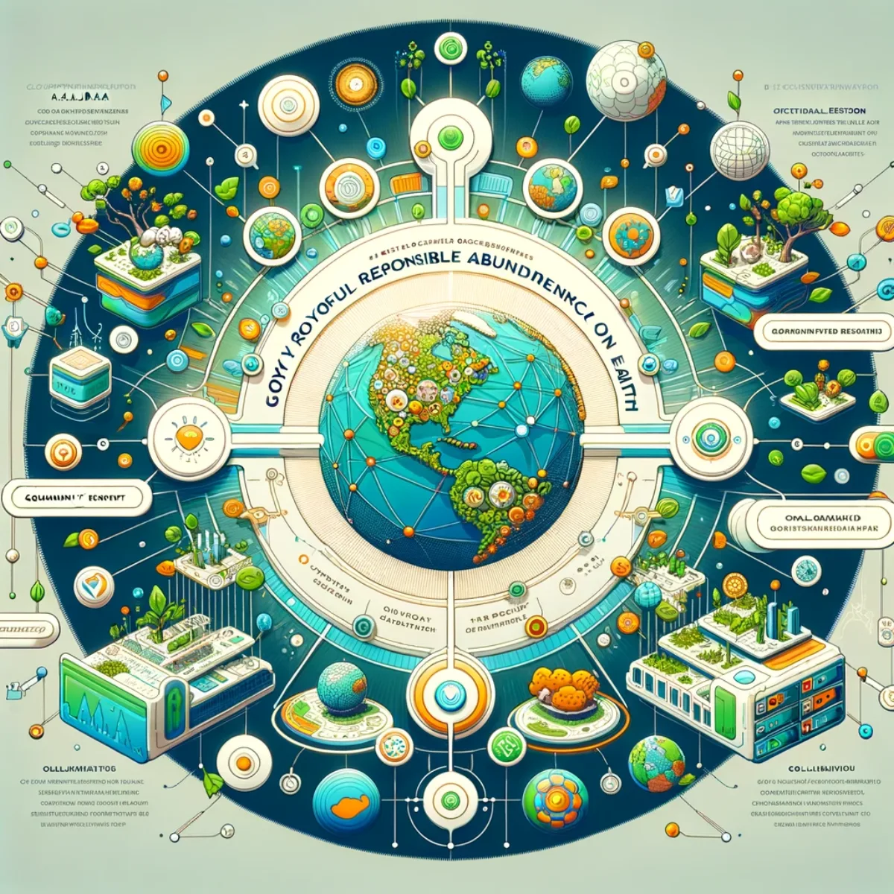
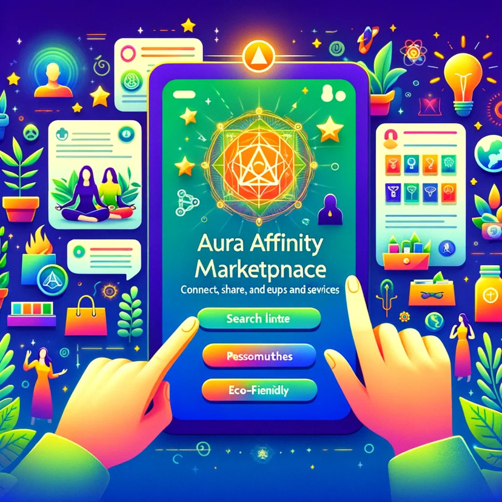

Pathways / Life & living
Blockchain
GAJRA Earth, the Aura Affinity Marketplace, and what trust looks like when you own your part of it: power spread out, communities holding their own, no big tech in the middle.

Decentralising power, empowering communities
Blockchain & D.A.O.s overview
This is a plain look at how blockchain lets communities govern themselves. A Decentralised Autonomous Organisation runs on rules everyone can see, so decisions stay transparent, secure and in the hands of the people they affect. It's a way of holding power and trust together as a community, rather than renting it from a company that owns the ledger.

Cultivating global association for joyful responsible abundance
GAJRA Earth D.A.O.
GAJRA Earth (Global Association for Joyful Responsible Abundance on Earth) is a D.A.O. you can be part of and hold a real stake in, where shared hopes for a better world take root. It runs on community cooperation, focused on abundance that's shared rather than captured. Visit gajra.earth.

A marketplace held in common
Aura Affinity Marketplace
The Aura Affinity Marketplace is a place where care for people and planet meets everyday buying and selling. It runs on the blockchain, so it isn't just transactions; it's shared values with the value staying in the community that creates it, rather than skimmed off by a platform owner.

Your voice, our future
Live Aid 2025 World Vote
Live Aid 2025 World Vote is a chance to help make history. It brings together voices from every corner of the planet, each one carrying real weight, to vote on the issues that matter to all of us and move towards something more harmonious. Your vote is yours and counted on-chain. Visit liveaid2025.com.

Keeping A.G.I. answerable to us
The Race to A.G.I. Alignment
The Race to A.G.I. Alignment is where people work together to guide the arrival of Artificial General Intelligence. It tracks progress towards A.G.I. that stays true to human values, so that as this technology advances it amplifies who we are rather than replacing it, and stays accountable to the communities it touches instead of a handful of owners.

Work you own a piece of
The Future of Work
This is a look at work where you hold a real stake in what you help build. Augmented reality meets your physical space, AI assistants support your decisions, and shared tools connect people across the globe: a way of working where the value you create stays closer to you, rather than flowing up to a platform you only rent.

Empowering global abundance
GAJRA Earth I.C.O.
GAJRA Earth's Initial Coin Offering ties cryptocurrency to the pursuit of shared abundance: a way to take part that's about more than financial return, growing a community and an ownership stake in a world that flourishes in step with nature. Visit gajra.earth.
Keep exploring